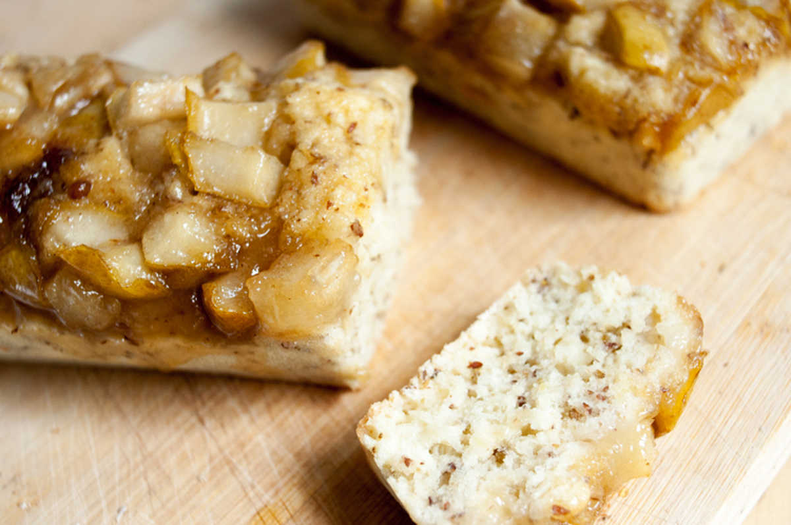

anise bread with sweet pear sauce
2 mini loaves — 40 minutes
I love baking with the mini silicone pans I bought, I've been making mini everything. This time, I made some anise bread topped with a sweet sauce, and loaded with caramelized pear chunks.
My bag of anise seeds has been sitting in my pantry, for way too long, begging for purpose. The taste of anise pairs very well with pears.
 flax seeds7 g
flax seeds7 g water45 ml
water45 ml granulated sugar50 g
granulated sugar50 g anise seeds5 g, ground
anise seeds5 g, ground all purpose flour90 g
all purpose flour90 g baking powder7 g
baking powder7 g soy milk150 ml
soy milk150 ml
bread
- Preheat oven to 325F.
- Put 7 g (1 tbsp) of ground flax seeds with 45 ml (3 tbsp) of water, let thicken for 5 minutes (this is your flax 'egg'). Mix in 50 g (1/4 cup) of sugar and stir until dissolved. Add 5 g (1 tsp) of ground anise seeds, and mix once more.
- Add 90 g (3/4 cup) of all purpose flour to a bowl with 7 ml (1 1/2 tsp) of baking powder. Mix.
- Pour the wet ingredients into the dry ones, while gradually adding a bit over 150 ml of soy milk.
- Transfer evenly, to 2 mini loaf pans.
 bosc pear1
bosc pear1 canola oil15 ml
canola oil15 ml- granulated sugar15 g
 maple syrup15 ml
maple syrup15 ml
sauce
- Cut your bosc pear into cubes.
- Heat a pan at medium to high heat, add 60 ml (1/4 cup) of canola oil. Once melted, add 15 g (1 tbsp) of sugar and 15 ml (1 tbsp) of maple syrup.
- Once it starts to boil, add the cubed bosc pear and lower the heat. Let it bathe in the sweet mixture for 3-5 minutes.
- Pour the sauce over the 2 mini loaves, bake for 30 minutes.
- Let cool and serve!